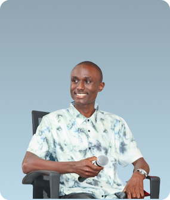
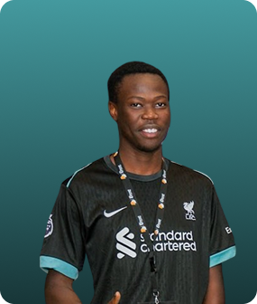
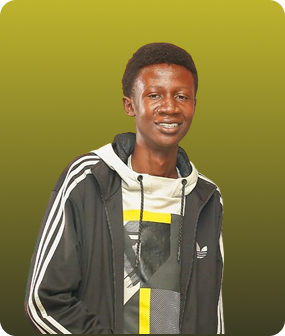
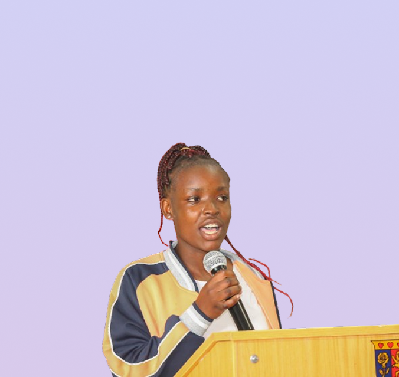

Beyond Adversity BTC Podcast is more than just a show — it's a movement. Founded by Alfonce Ouma, the podcast was born out of a passion to uncover the raw, unfiltered stories of individuals who have triumphed over hardship. Whether facing economic barriers, social stigma, or personal trauma, our guests embody resilience and determination.
Powered by Bitcoin values of freedom, innovation, and decentralization, we spotlight African voices and global changemakers who are reshaping their lives and communities. Through bold conversations and emotional truths, we amplify the human spirit one episode at a time.
Join us in breaking silence, building strength, and going beyond adversity.

Founder & Host

Head of Production

Chairperson

Head of Tech